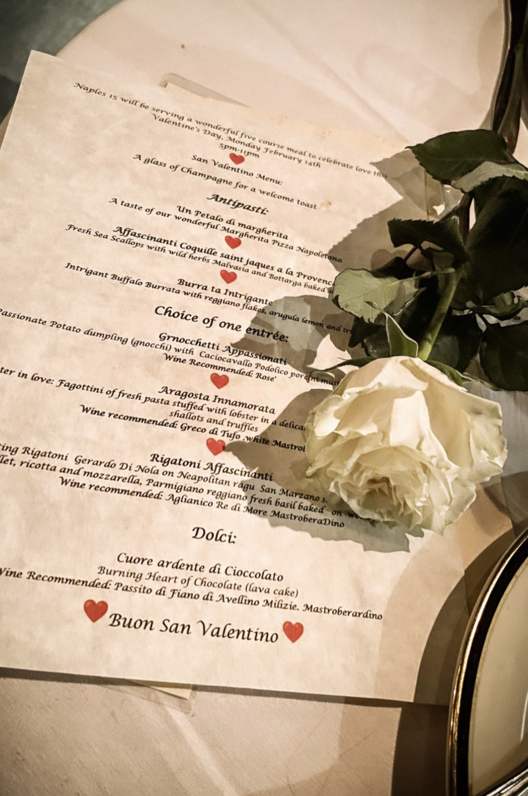
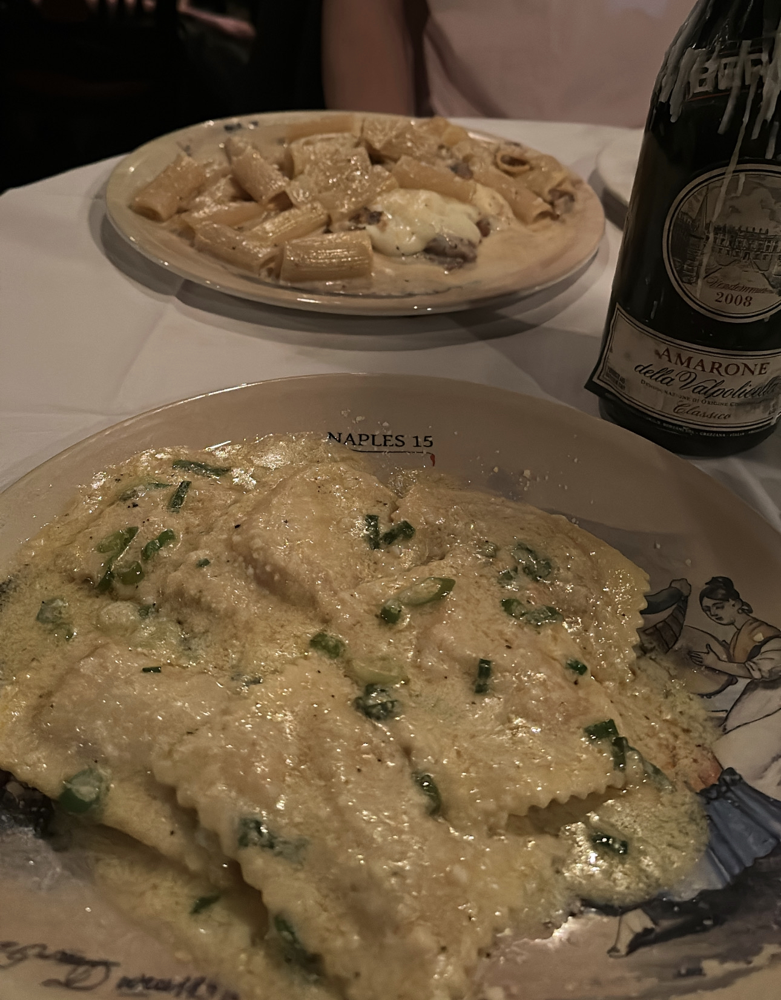
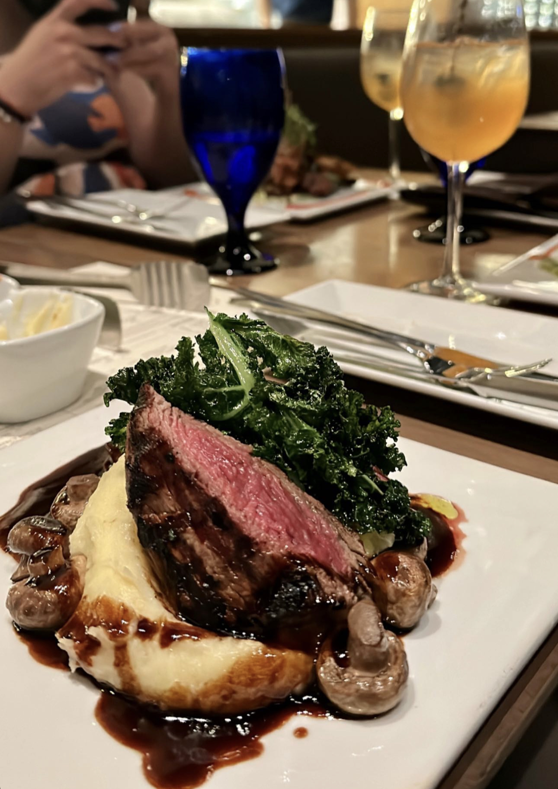
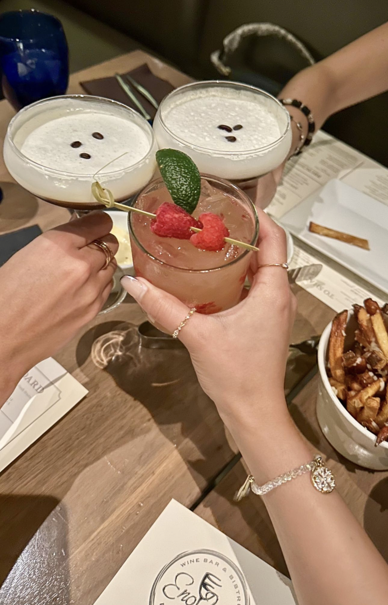

My ultimate favorite restaurant in Madison is Naples 15. The Ravioli all' Aragosta and Vitello alla Ferdinando II are to die for. It's worth the $$$!
 The ambiance at Eno Vino Downtown is great. For the entrée, the bistro fillet is my favorite. The thai flatbread was pretty good too. For mocktails, I recommend the raspberry mule and blueberry lavender spritz.
  Check out my favorite Madison restaurants on Google Maps!